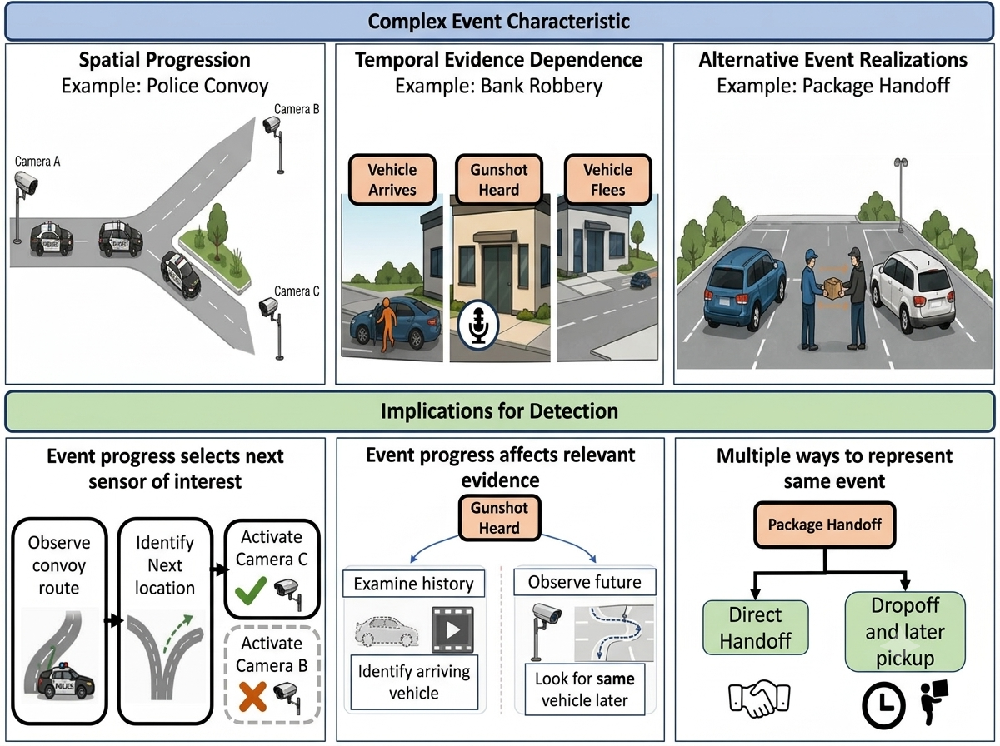
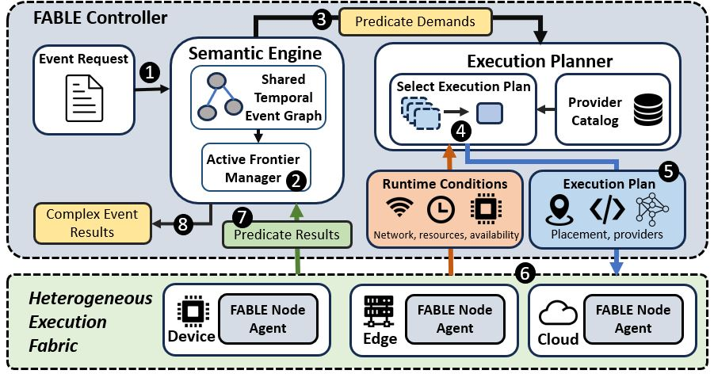
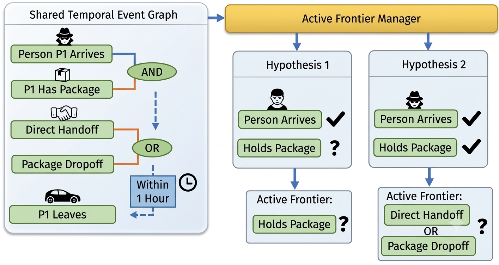
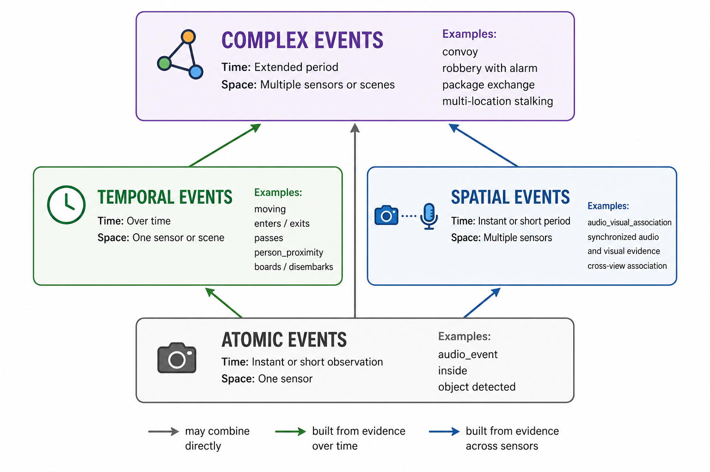

Spatial progression
A route observation changes which sensing location is likely to matter next.
Distributed complex-event recognition for IoT
FABLE uses complex-event progress as a control signal for sensing and computation—adapting sources, models, placements, and retained-data requests as each event unfolds.
The problem
Observations do more than confirm a pattern. They can reveal the next relevant camera, make an earlier recording useful, or eliminate an entire event interpretation.

A route observation changes which sensing location is likely to matter next.
A new observation can trigger bounded inference over retained history or a future interval.
Evidence keeps viable branches alive and avoids work for interpretations already ruled out.
The system
FABLE separates what the event means from how its next predicates are physically realized.

Occurrence-specific state
The request-level temporal graph is shared, but each candidate match carries lightweight bindings, satisfied nodes, viable alternatives, and event-time state.
Two hypotheses for the same event can therefore require different evidence at the same moment.

Core capabilities
Typed predicates, conjunctions, alternatives, ordering, temporal windows, absence, duration, and role bindings.
Per-hypothesis frontiers identify exactly which unresolved conditions can change recognition.
A bounded multi-label search jointly chooses realization alternatives only through the next semantic checkpoint.
Explicit historical predicates request retained intervals while respecting locality, expiry, and latest-useful deadlines.
MQTT-coordinated node agents manage provider processes, leases, artifacts, readiness, cancellation, and typed results.
Heartbeat, capacity, availability, and network changes refresh feasibility without changing event semantics.

Evaluation program
The repository includes a prepared evaluation harness for recorded multimodal traces, planner replay, controlled compute and network conditions, and physical Raspberry Pi, Jetson, and host execution.
Does progress-driven planning preserve timely, binding-correct recognition while reducing provider-active time, GPU-seconds, and communication?
Does joint selection improve feasibility and cost relative to static, greedy, and bounded exhaustive alternatives?
Can replanning respond to operating-condition changes and spatial, temporal, and alternative evidence requirements?
Status note. The bundled paper is a working draft and contains unfinished result placeholders. This page therefore describes the implemented system and prepared methodology without asserting final headline measurements.
Explore FABLE